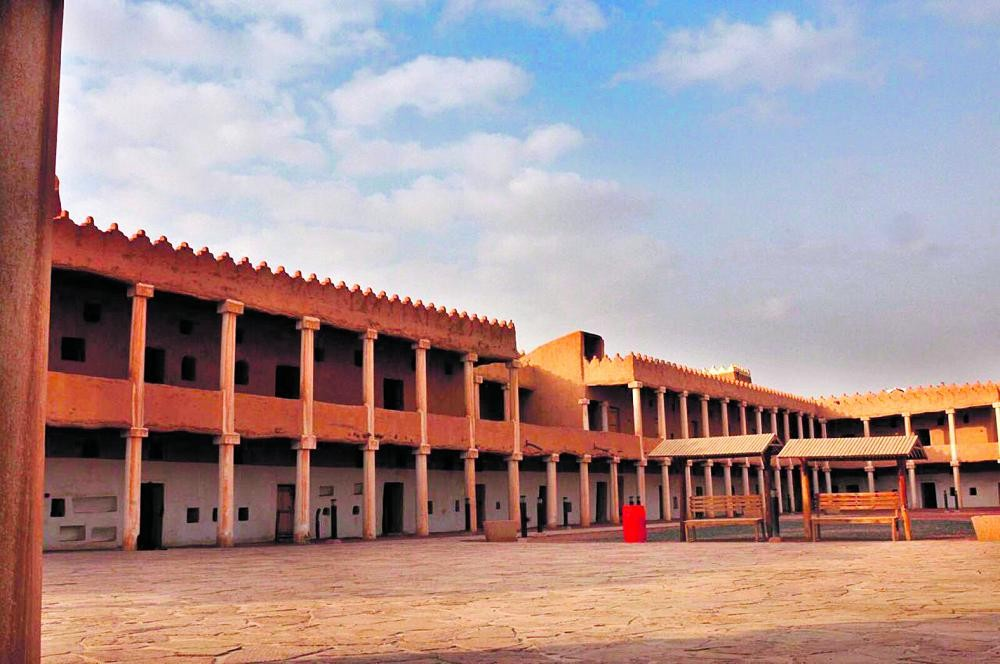

Qishlah
From its inception in 1362 to 1375 Hijra, the palace served as the headquarters of the military garrison in the region. From that time until the year 1395 AH, the palace was used as the headquarters of the district police, and then the police handed him over to the Antiquities and Museums Agency. Al Qashleh was built from milk and stone in the prevailing Najdi style, as the palace was characterized by stucco decoration, which was represented by the engineering and floral elements
Location